合衆国宇宙管理局
United States Space Administration (U.S.S.A.) — Fallout世界のNASA
概要
合衆国宇宙管理局（U.S.S.A.）は、アメリカ合衆国の宇宙計画を管轄した政府機関である。現実世界のNASAに相当する。
Fallout 76、Fallout 3、Fallout 4で言及される。
歴史
宇宙開発競争（1960年代）
1960年代、アメリカ合衆国は宇宙開発競争に突入した。U.S.S.A.は宇宙飛行に関連するあらゆる事業の国家的権威として急速に台頭し、本部はワシントンD.C.に置かれた。
ペルシャ猫のミスター・ペブルスが、宇宙に打ち上げられ生還した最初の動物となった。
カール・ベル大尉は、宇宙カプセル「ディファイアンス7」に搭乗し、12分7秒で地球を1周。宇宙に行った最初の人間とされた。この主張はソ連と中国の両方から異議を唱えられた。ベルは1961年5月5日、カプセルの帰還時の墜落で死亡した。
同じく1960年代、空軍のハーティガン大佐とその宇宙船「クララベラ7」が低軌道飛行から帰還中に、マザーシップ・ゼータのエイリアンに拉致された。言語スペシャリストのホリー・バリスフォードも同時期に拉致された。
月面着陸（1969年）
1969年7月16日、ヴァーゴII月面着陸船「ヴァリアント11」が、リチャード・ウェイド大尉、マーク・ガリス大尉、マイケル・ヘイゲン大尉を乗せて月面に着陸。人類初の月面歩行を達成した。
1969年11月14日には、ヴァーゴIII「ヴァリアント12」も月面に着陸し、旗を残した。この旗は特殊素材で製造されており、2052年の最後の有人月面飛行で回収された。
デルタIXロケット（2020年〜）
2020年、U.S.S.A.はデルタIXロケットを就役させた。77回以上の成功した打ち上げを記録した、同国史上最も成功したロケットの一つ。
2名の宇宙飛行士を搭載し、最大24日間の活動が可能だった。最長飛行記録はゼウス12ミッションの17日間。
月への最後の有人ロケットであり、その後は軍事用に改修され、クルーと計器セクションが核弾頭に置き換えられた。
ヴァリアント宇宙ステーション
大戦前のある時点で、U.S.S.A.は「ヴァリアント1」宇宙ステーションの維持に関与していた。
ステーションは大戦で地球に落下し、アパラチアのトキシック・バレー地域に墜落。
2103年には地元のレイダー派閥の拠点となり、「ザ・クレーター」と呼ばれるようになった。
主要プロジェクト
ディープ・スリープ・プロジェクト
U.S.S.A.研究開発部が手掛けたディープ・スリープ・プロジェクトは2070年に打ち上げられた。
宇宙での冬眠ポッドの実行可能性をテストするプロジェクトで、コマンダー・ソフィア・ダゲールを含む4名で構成された。
エマーソン・ヘイル博士がアークトス・ファーマとのプロジェクトZに関する政府契約を引き受け、セラムKのゼロG改良版の開発を目指した。
海軍無線局シュガー・グローヴがU.S.S.A.の施設として機能し、ディープ・スリープ・プロジェクトのA.I.「A.T.H.E.N.A.」がこの施設のデータセンターに設置されていた。
マーズ・ショット・プロジェクト
2070年代、U.S.S.A.は2078年7月までに有人火星ミッションを打ち上げる「マーズ・ショット・プロジェクト」を計画した。
ArcJet Systemsが、XMBブースターエンジンと深宇宙通信トランスミッターの製造を受注。
2076年初頭にXMBの重量問題が発生したが、プロジェクト公開後に解決された。
2077年9月、政治的緊張の高まりにより、U.S.S.A.はプロジェクトが1年以上遅延する可能性を懸念した。
CC-00パワーアーマー
CC-00モデルのパワーアーマーは、大戦前にU.S.S.A.が製作した。
ハブリス・コミックスが実写版キャプテン・コスモスのシーズンフィナーレのためにアーマーの小道具と実機を借り受けた。
ArcJet Systemsでの記者死亡事故後、マーズ・ショット・プロジェクトに好意的な報道を作るための試みだったが、大戦によって撮影は中断された。
宇宙船一覧
| 名称 | 概要 |
|---|---|
| ディファイアンス7 | カール・ベル大尉が搭乗した宇宙カプセル |
| クララベラ7 | ハーティガン大佐の宇宙船（エイリアンに拉致） |
| ヴァーゴII | 月面着陸船「ヴァリアント11」— 人類初の月面着陸 |
| ヴァーゴIII | 月面着陸船「ヴァリアント12」 |
| デルタIXロケット | 77回以上の打ち上げ成功、後に軍事転用 |
| デルタXIロケット | 後続型ロケット |
主要メンバー
| 名前 | 役割 |
|---|---|
| コマンダー・ソフィア・ダゲール | ディープ・スリープ・ミッション船長 |
| エマーソン・ヘイル博士 | プロジェクトZ監督者 |
| カール・ベル大尉 | 宇宙初の人間（公式） |
| リチャード・ウェイド大尉 | ヴァーゴII パイロット |
| マーク・ガリス大尉 | ヴァーゴII クルー |
| マイケル・ヘイゲン大尉 | ヴァーゴII クルー |
| ハーティガン大佐 | 空軍、クララベラ7 |
| キャロル・バーナード博士 | 冬眠ポッド設計者 |
| ノワク博士 | ディープ・スリープ クルー |
| サイモン・リー博士 | ディープ・スリープ クルー |
| ホリー・バリスフォード | 言語スペシャリスト |
| ミゲル・カルデラ | 暗号キープログラム担当 |
| A.T.H.E.N.A. | ディープ・スリープ A.I. |
| PANDORA | 自動操縦A.I. |
| ARTEMIS | アサルトロン |
ギャラリー
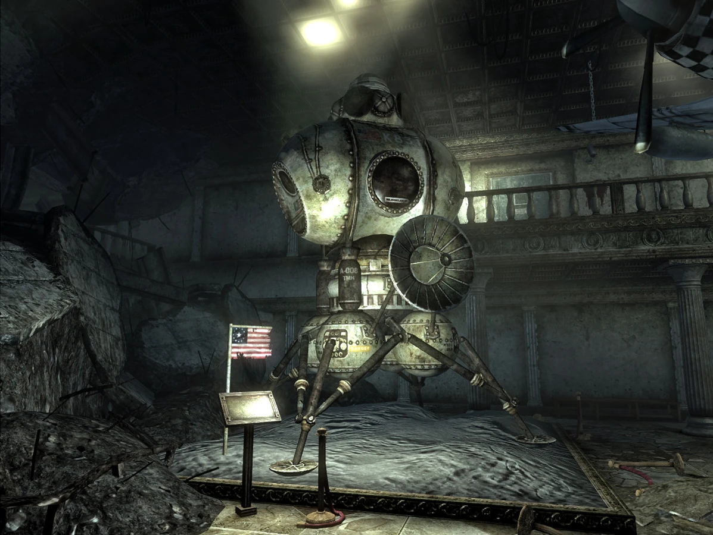
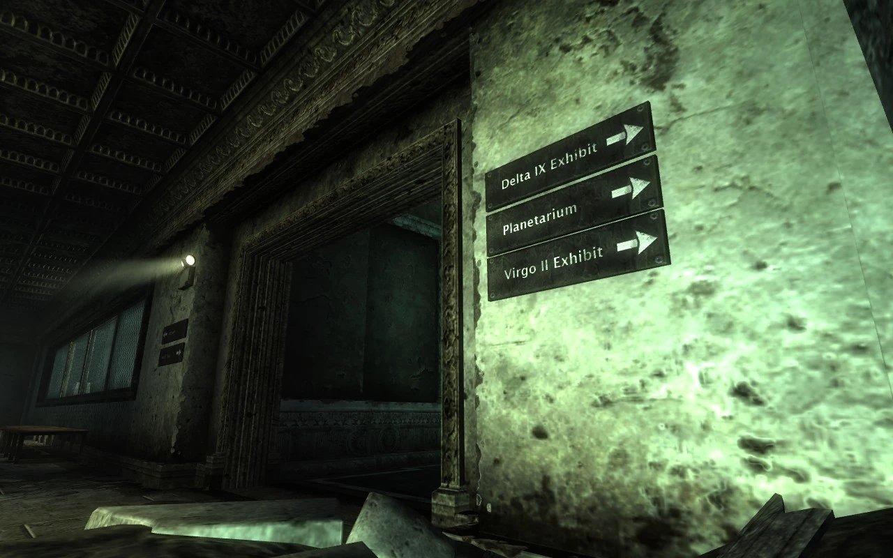
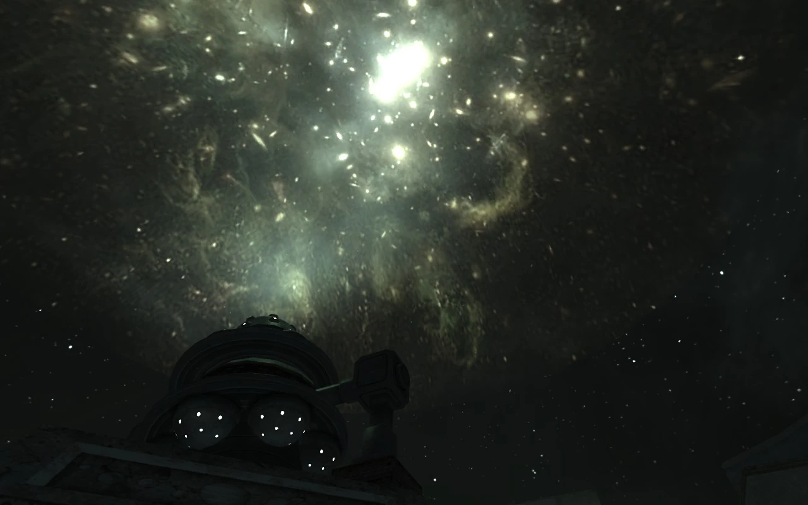
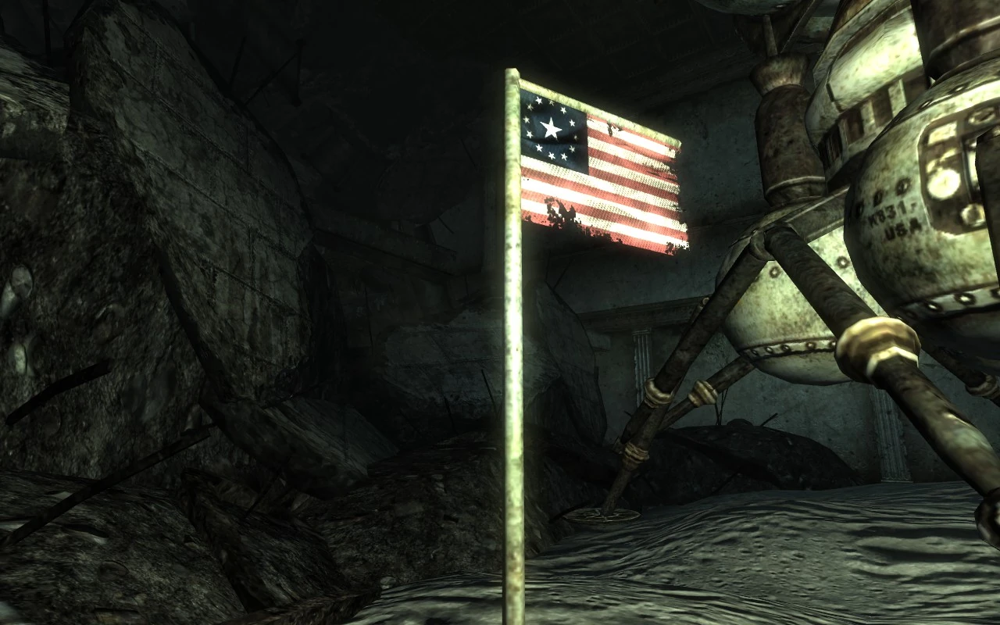
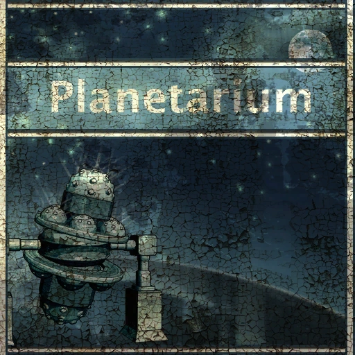
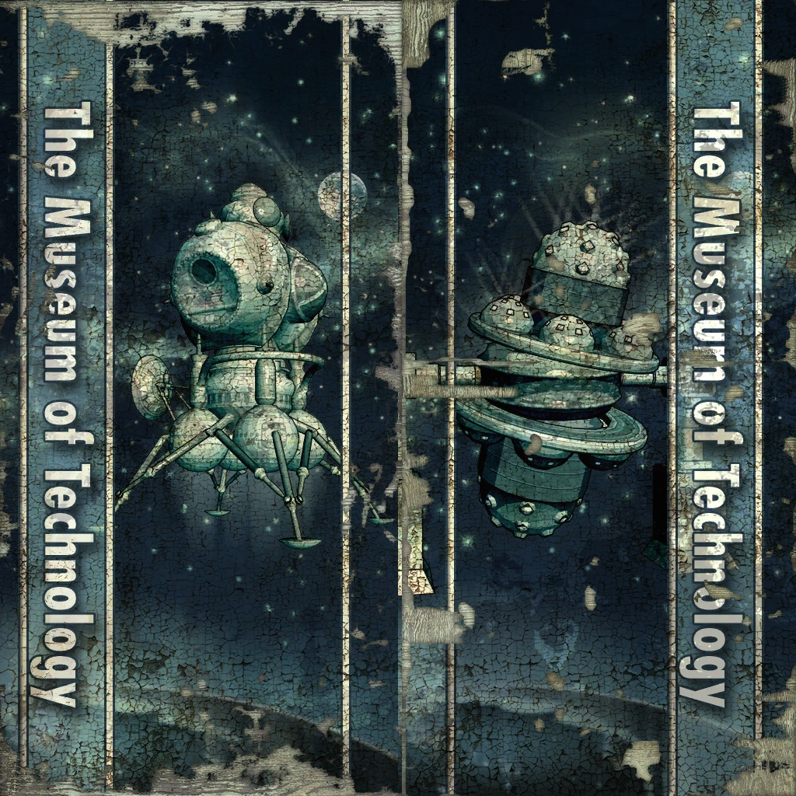
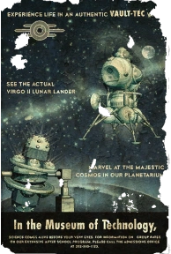
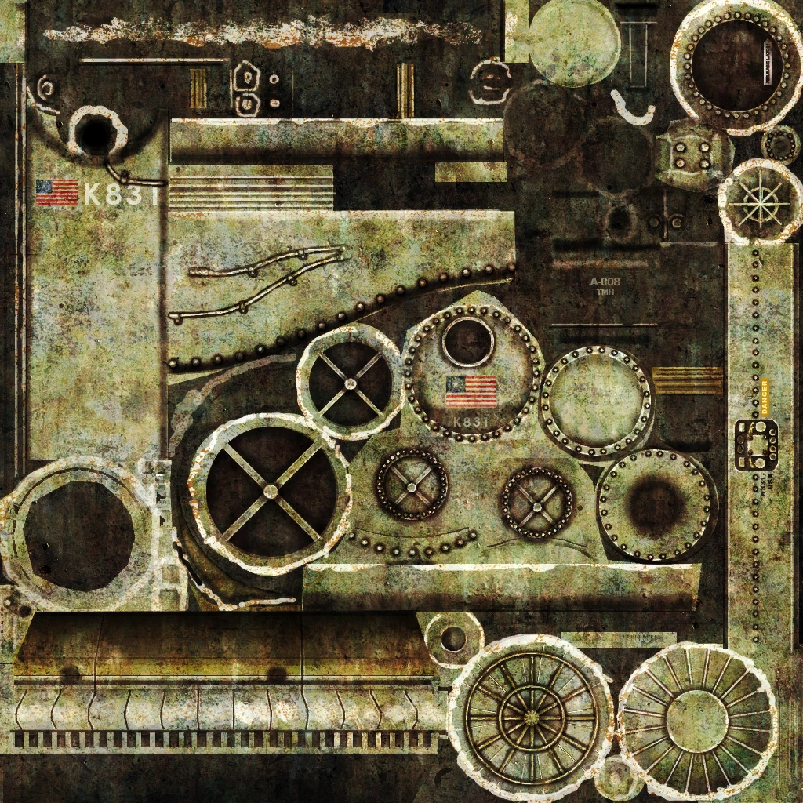
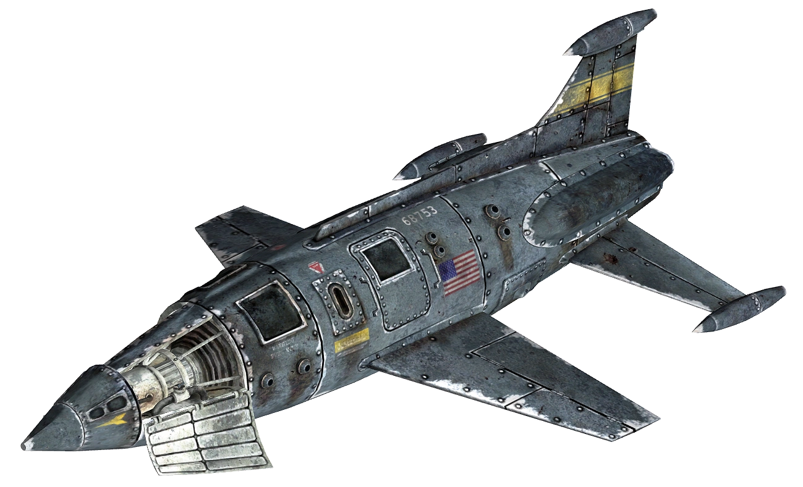
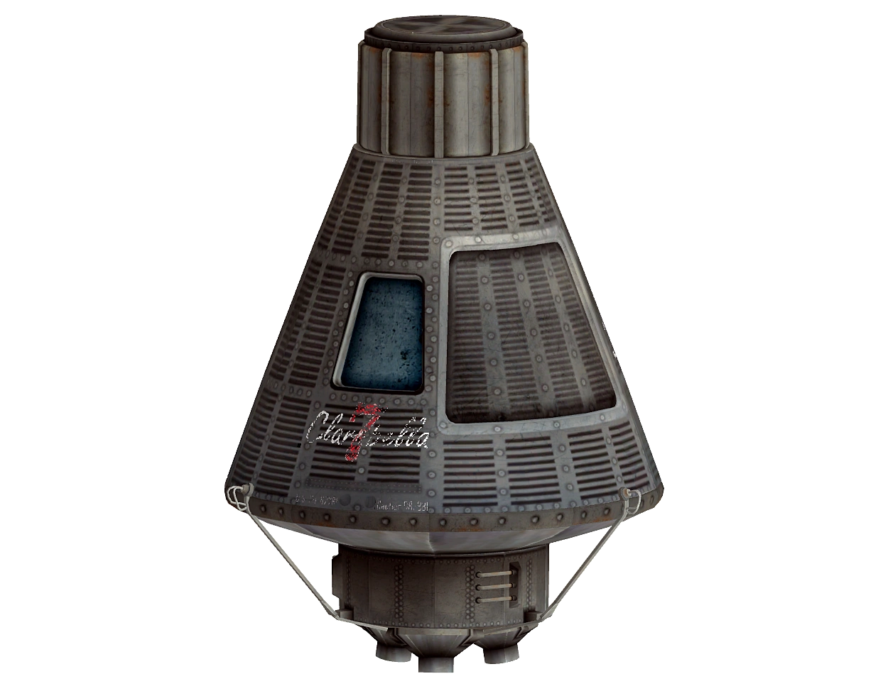
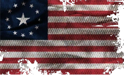
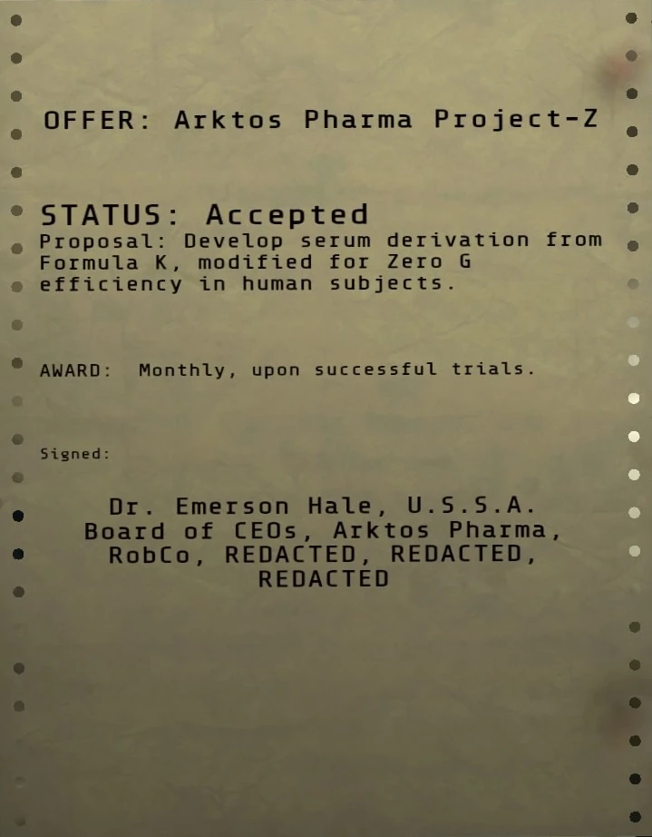
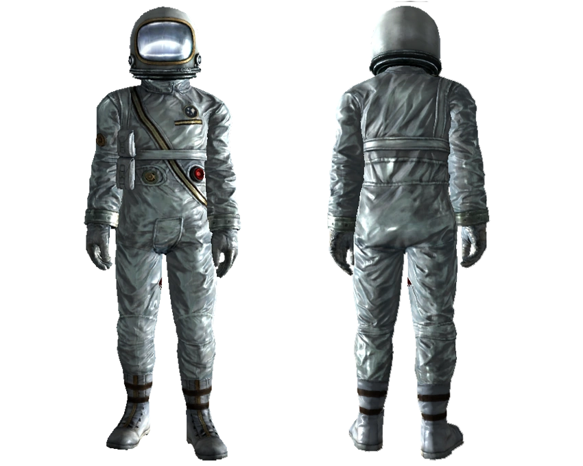
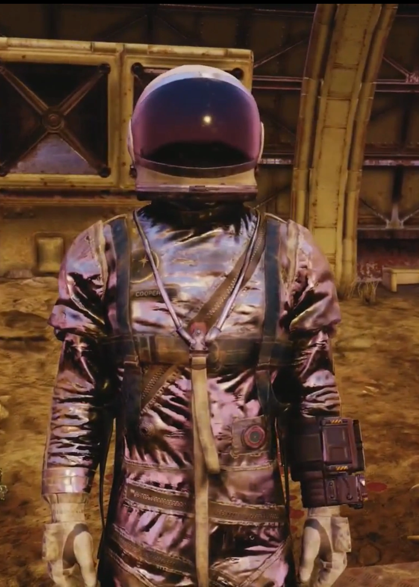
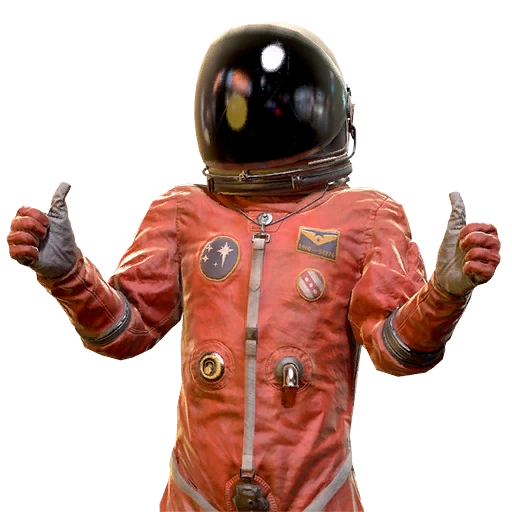
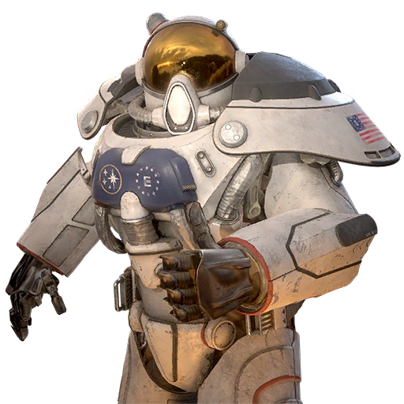
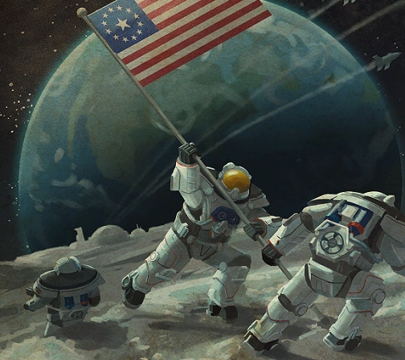
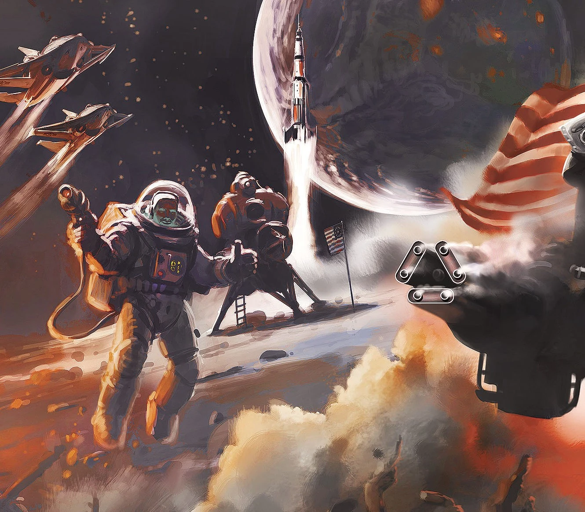
登場作品
合衆国宇宙管理局はFallout 3、Fallout 4、Fallout 76で言及される。
Fallout世界の宇宙計画って、調べれば調べるほど現実のNASAとの差異が面白いですよね。
月面着陸がアポロ計画じゃなくて「ヴァーゴII ヴァリアント11」で、しかもクルーの名前がウェイド・ガリス・ヘイゲンっていう架空の人物になってるのが、歴史改変SFとしてしっかり作り込まれてる。
ミスター・ペブルスがペルシャ猫で宇宙に行った最初の動物っていうのも、現実のライカ犬のオマージュだけどFalloutらしくコミカルで最高です。
デルタIXロケットが77回も成功した後に核弾頭搭載用に改修されるっていうのが、Falloutの「技術は必ず軍事転用される」っていうテーマそのもの。
ディープ・スリープ・プロジェクト、A.T.H.E.N.A.、ソフィア・ダゲール、エマーソン・ヘイルの記事と全部つながっていて、U.S.S.A.が一連のストーリーの中心的存在だったことが分かります。
This article was created by translating and editing United States Space Administration from Nukapedia: The Fallout Wiki.
Licensed under the Creative Commons Attribution-Share Alike License (CC BY-SA 3.0).
コミュニティ維持のため、寄付を受け付けております。
> COMMENTS